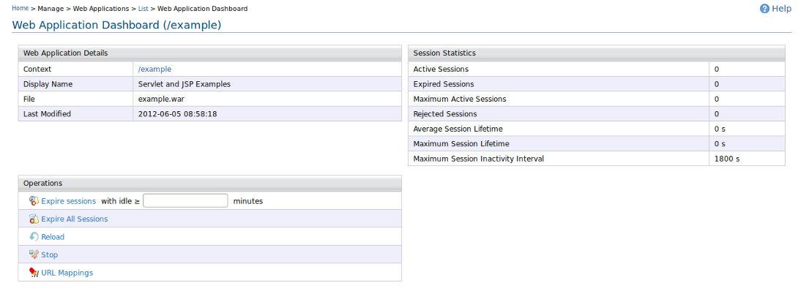
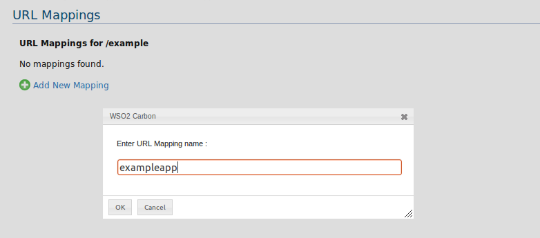
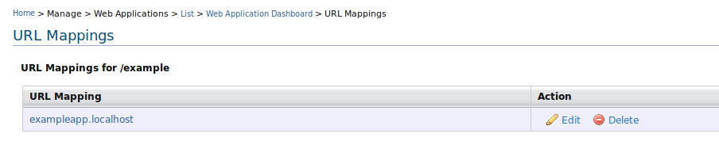
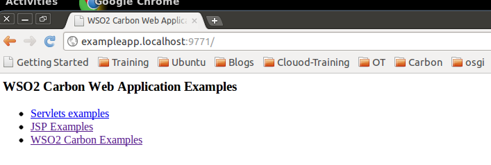
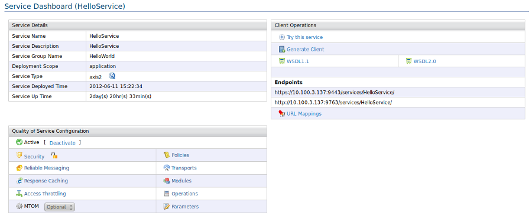
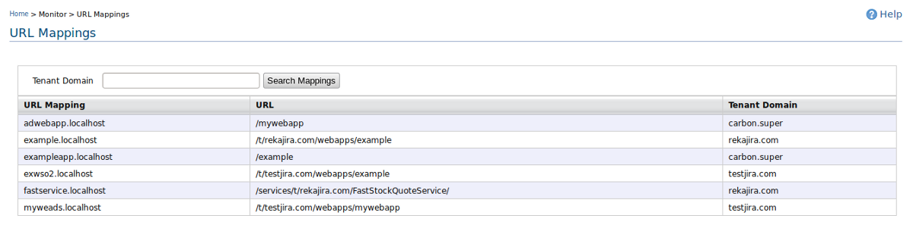

This page contains the information on how to access your hosted web application
through a
Instead of going through this long URL process, we provide a way to access your hosted web application with a short URL like https://appid.localhost:port/ in standalone products. If your App Server is fronted with load balancher, then https://appid.localhost can be used.
Eventually, your shorten URL will be mapped as below.
http://localhost:port/webapps/t/tenant_domain/webappname ==> https://appid.localhost:port

Figure 1: URLmappings in web application information page.
When you click on in web application dashboard, you can get the URL mappings page. You can add the mappings here.

Figure 2: adding a URLmapping to webapp
URL mappings page has the options to control over your URL mappings such as edit and delete.

Figure 3: control the URLmapping to webapp
Once you created URL mapping of a web application, let's take the mapping name as "exampleapp", then your domain will be "exampleapp.localhost" where the suffix "localhost" comes from CARBON_HOME/repository/conf/etc/url-mapping-config.xml. You can configure your own suffix and URL mappings limit per web application in the configuration file above. By default suffix is "localhost" and URL mappings limit is one.
The following image depicts how your web application could accessed through your own domain in a browser.

Figure 4: accessing web application with shorten url.
You have to create a cname to access your own domain. In case cname is not available with you at the moment, you can use /etc/hosts to put your domain entries by pointing to your local ip which can only be applicable for testing purposes.
If you create a URL mapping for a service through service dashboard as shown below, you can follow the same steps like web application to access your wsdls, tryit and rest calls with the short urls.
"http://servicetest.localhost:port?wsdl" - to access wsdl of your service
"http://servicetest.localhost:port?tryit" - to access tryit of your service
"http://servicetest.localhost:port/getQuote" - to access rest call of your service

Figure 5: URL mappings in services-dashboard
Admin can view all the URL mappings through monitor --> . Admin can search by tenants to get URL mappings of particular tenant.

Figure 6: List of All URL mappings (admin view).